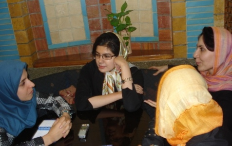
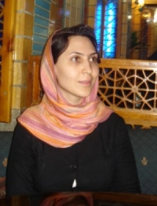
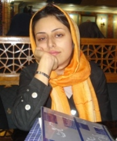
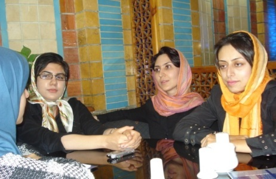

پذيرش > مقالات > خارج از چارچوب > به معنای واقعی کلمه نه شعار، همه با هم کار می کنیم
 میزگردی با کمیته داوطلبان کمپین میزگردی با کمیته داوطلبان کمپین

 به معنای واقعی کلمه نه شعار، همه با هم کار می کنیم به معنای واقعی کلمه نه شعار، همه با هم کار می کنیم
13 آبان 1387 - مریم مالک - نسخه قابل چاپ
تغییر برای برابری:پی گیری داوطلبان کمپین یک میلیون امضا در تهران از کمیته هایی است که شاید بیشترین فعالیت و کمترین انعکاس را در رسانه کمپین داشته است. این کمیته شاید به دلیل این که از مهمترین ورودی های کمپین بوده هم با حساسیت امنیتی ازبیرون ( نمونه اخیر آن تفتیش منزل پرستو اله یاری ) رو به رو بوده و هم با خود سانسوری یا محافظت امنیتی از درون؛ و از همین روی به رغم فعالیت بیرونی و ارتباط با داوطلبان جمع اوری امضا که بیشترین حجم فعالیت این کمیته را در بر می گیرد ارتباط این کمیته با کمیته های داخلی کمپین تهران به ویژه رسانه حداقل بوده است و حتی دعوت فعالان کمیته داوطلبان به کمیته رسانه به ویژه در بخش کوچه به کوچه که ارتباط مستقیم با داوطلبان دارد و یا حضور یکی از افراد رسانه در کمیته داوطلبان برای انعکاس صدای بیشتر این کمیته دررسانه کمپین و همچنین ارائه گزارش پی گیری داوطلبان به کمیته ها گرچه تلاشی مثبت در این عرصه بوده اما کافی نبوده است. پرستو اله یاری، مارال فرخی، نیکزاد زنگنه از اعضای کمیته پیگیری داوطلبان کمپین در گفتگو با مریم مالک عضو مشترک هر دو کمیته از فعالیت ها، مشکلات و انتقادات این کمیته سخن گفته اند .
این میزگرد قرار بود همزمان با سالگرد کمپین و در ادامه ارائه گزارش عملکرد کمیته های کمپین در آستانه سومین سال فعالیت کمپین منتشر شود که به دلایل گوناگونی چون حاضر نبودن گزارش و یا اولویت بندی برنامه های انتشاراتی رسانه به تعویق اقتاد و قرار بر آن شد که گزارش کمیته ها نه یک باره که به مرور منتشر شود.
- 
مریم مالک: کمیته پیگیری داوطلبان چطور تشکیل شد؟
مارال فرخی: حدود 3،4 ماه از شروع کمپین یک میلیون امضاء گذشته بود و تا آن زمان 40، 50 نفر داوطلب بودند که کارگاه آموزشی را گذرانده بودند و این نیاز حس می شد که این داوطلبان را طوری پیگیری کنیم. به این نتیجه رسیدیم که یک کمیته تشکیل دهیم و مشخصات داوطلبان را در بانکی ثبت کنیم و عده ای هم مسئول باشند که هر چند وقت یکبار داوطلبان را پیگیری کنند، دعوت کنند، صحبت کنند، تجربه هایشان را بگویند.
البته از ابتدا به این شکل نبود، خود من بعد از اینکه کارگاه را گذرانده بودم جلوه جواهری به من زنگ زد و گفت بیایین خانه من، یک عده ای آنجا بودند سارا، زارا، نوشین و من و یکی دو نفر از بچه های دیگر کمپین. از اولین جلسات پیگیری بود و ازتجربه های امضاء جمع کردن، حال و هوای کار کردن در کمپین صحبت کردیم. یعنی اول کمیته داوطلبان وجود داشت، و تعداد داوطلبان کم و محدود بود اما به تدریج تعداد آنان زیادتر شد، درجلسه ای که من و پرستو و نیلوفر بودیم پیشنهاد دادیم که کمیته ای تشکیل بدهیم که داوطلبان را پیگیری کنیم و ابتدا پی گیری به این صورت بود که امضاها را جمع آوری کنیم. اینطور بود که کمیته پیگیری از دل کمیته داوطلبان بوجود آمد و کمیته پیگیری داوطلبان شکل گرفت. در واقع نیاز به وجود این کمیته زمانی احساس شد که تعداد داوطلبان بیشتر شد.
تا قبل از کمیته پیگیری داوطلبان، فعالیت کمیته داوطلبان به چه صورت بود؟
پرستو الهیاری: از همان اول شنیدیم و دیدیم که در آئین نامه داخلی کمپین نوشته شده بود که کمیته داوطلبان هم وجود داشته است. ابتدا برنامه جمع آوری امضا از داوطلبان بود و هر شخصی کارگاه آموزشی را می گذراند عضو داوطلبان می شد و ابتدا جلوه به تنهایی کارهایش را انجام می داد و بعد کمیته پیگیری شکل گرفت ولی روند کار مشخصی نداشتیم. در جلسات اول افرادی مثل نیلوفر گلکار، زینب پیغمبر زاده و من بودیم. تعداد زیادی بودیم کسانی که الان خیلی هایشان در کمیته های دیگر هستند. هر دو نفر از ما با عده ای در ارتباط بودیم.
مارال: ما در این جلسات از تجربه های امضاء جمع کردن، سختی های کار، ارتباط با مردم، صحبت می کردیم. کمیته ها را معرفی می کردیم و هر کس بر حسب علاقمندی به آن کمیته ها می رفتند.
داوطلبانی که معرفی می کردید چطور جذب کمیته ها می شدند؟
پرستو: زیاد راحت نبود، سخت بود چون کمیته ها از ابتدا ساختار مشخصی نداشتند که ما بتوانیم خیلی راحت یک آدم را بفرستیم آنجا و او برود و در آنجا کار انجام دهد برای اینکه راهکاری نبود، فعالیتها بیشتر ارتباطی بود. مثلا من وقتی کسی را می شناختم می گفتم تو رو خدا فلانی را جذب کنید یا بچه های دیگر هم به همین شکل، آمدیم فکری به حال این موضوع کنیم هر کدام از اعضای پیگیری را به عنوان رابط کمیته ها معرفی کردیم و در کمیته هماهنگی هم مطرح کردیم و همه کمیته ها موافق بودند و پذیرفتند که ما یک رابط داشته باشیم با این وجود این خیلی سخت بود.
نیکزاد زنگنه: در مورد جذب شدن افراد کلا یک سیستمی که در پیگیری بود خیلی اتفاقی بود که داوطلبان جذب کمیته ها می شدند یعنی اینطور نبود که سیاست کمیته این باشد که حتما داوطلب جذب کنند. در مورد من هم همینطور بود یک قرار جمع آوری امضای گروهی گذاشتیم و نیلوفر به من زنگ زده بود رفتیم بیرون و نیلوفر در مورد فعالیتهای کمپین توضیح داد و گفت اگر دوست داشتی بیا و بقیه بچه ها را ببین ولی در مورد کمیته ها توضیح خاصی نداد البته در کارگاه اصلی توضیح داده شده بود ولی پیگیری خاصی از طرف کمیته ها نشده بود حتی وقتی ما مشخصات افراد را می دادیم از طرف کمیته ها پیگیری نمی شد که افراد بروند و این اتفاق نمی افتاد.
از وقتی که کمیته پیگیری داوطلبان سازماندهی شد در بانک، اطلاعات هر داوطلب هست از جمله اطلاعات تحصیلی، علاقمندی در بخشهای مختلف کمپین، ایمیلها و غیره. البته یکبار کمیته هنری اعلام کرد که لیست یک سری از داوطلبان را که می خواهند در کمیته هنری فعالیت کنند به آنها بدهیم و ما این کار را انجام دادیم. در 4 ماه اخیر این اتفاق افتاده است ولی تا قبل از این جذب داوطلبان بصورت رابطه ای بوده است.
مسئولیتها و وظایف در کمیته شما به چه شکلی است؟
مارال: ما یکسری کارهای مشترک با هم انجام می دهیم مثل پیگیری کردن داوطلبان، برای چک کردن ایمیل کمیته و یا نگه داشتن بانک هم تقسیم وظایفی انجام داده ایم و به صورت دوره ای است البته مدتی است که ثابت است.
ایده بانک اطلاعاتی از کجا شروع شد؟
پرستو: ایده بانک از آنجا بود که ما گزارش هر جلسه کارگاه آموزشی را داشتیم و تعدادش زیاد بود و دائم پرینت گرفته می شد و جلوه و من و حدیث و اعضای دیگر بطور مشترک تصمیم گرفتیم که این بانک را بسازیم و با کمک همدیگر این بانک را کامل کردیم. به جز مشخصات فردی اینکه کدام آموزش را گذراندند، از طرف چه کسی معرفی شدند، با چه کسانی کار می کنند، تعداد تماسهایی که با آنها گرفته شده و غیره، همه این اطلاعات در بانک هست.
- 
بانک الان در اختیار کمیته پیگیری داوطلبان هست و بارها اعلام کردیم به کمیته ها که هر کس هر اطلاعاتی خواست بگوید و ما هم می دهیم.
زمانی این بحث مطرح شد که یک سری افراد بانک را می خواهند و شما ندادید، علتش چه بود؟
پرستو: یک زمان فشار امنیتی روی ما خیلی زیاد بود و هنوز هم هست، معمولا هر بار مأمورها در جلسات ما بودند. ابتدا ما تصمیم گرفتیم از تلفنهای خودمان که کاملا تحت کنترل بودند تماس نگیریم، یک پیشنهادی به ما شد که از کمیته مادران کمک بگیریم و از کمیته مادران پیشنهاد شد که کل کمیته پیگیری را محول کنید به مادران و همه کارها را به مادران بسپارید و خودتان به کمیته های دیگر بروید تا مشکلات کمتر شود.
نیکزاد: البته مادران هنوز هم می گویند که لیست ها را به آنها بدهیم. در جلسه آخر که داشتیم برای تدارک سالگرد همه کمیته ها بودند اعلام کردیم هر کس از ما لیست خواست به ما ایمیل بزند ولی در پایان جلسه بجز خانم شادفر کسی لیست از من نخواست.
پرستو: این مثل یک موج بود که به کمیته پیگیری می خواستند کمک کنند ولی وقتی ما کمک می خواهیم کسی نیست، خیلی وقتها کمک خواستیم ولی کسی جواب نداد.
همیشه این سوال وجود داشت که بانک دست همه باشد یا نه؟ هر کسی خواست ایمیلی بدهیم یا حضوری؟ اصلا داوطلبان راضی هستند اطلاعاتشان دست همه باشد؟ اینها بحثهایی بود که ما هرگز به جواب نرسیدیم، یعنی از کل کمپین جواب مشترکی پیدا نشد.
نیکزاد: بعد از یک مدت کاربردی تصمیم گرفتیم کل اطلاعات دست همه نباشد مسئول بانکی داشته باشیم و یک پشتیبان که اگر مسئول بانک دسترسی نداشته باشد اطلاعات به راحتی در دسترس همه باشد و مسئله امنیتی هم رعایت شود.
مارال: وقتی به عقب برگردیم کمیته داوطلبان چند دوره را طی کرده است. دوره اول از بهمن ماه 85
بود که موضوع پیگیری داوطلبان برای امضا گرفتن مطرح بود.
- 
دوره بعد دوره ای بود که بچه ها گفتند فقط بحث امضاء گرفتن نیست، دوستی و برقرار کردن ارتباط با بچه های کمپین و داوطلبان هم مهم است تا ارتباط نزدیکتر شود. در همان کارگاهی که منزل جلوه بود تقریبا همه اسامی را به هم زد و یکسری لیست به همه ما داد که ما تماس بگیریم و شخصی بود. به این ترتیب که هر کسی به طور فردی با یک نفر تماس می گرفت قرار دو نفره می گذاشتند امضا تحویل گرفته می شد و اگر سوالی چیزی بود هم در فرصت کوتاه گفتگویی باز دونفره انجام می شد. آن موقع برای ایجاد ارتباط کارهایی که انجام دادیم بنا به سلیقهء فردی هر کس بود.
بعد از 3، 4 ماه جلسه ای در خانه پرستو بود در بهار 86 که بحثهای جدی بود و قرار شد که کمیته پیگیری مطرح شود و بحث ساختار هم شده بود که کمیته پیگیری هم مطرح شد و به شکل امروز شد.
در این دوره فایلهای داوطلبان را از پراکندگی درآوریم. و گزارش تمام کارگاهها جمع آوری شد در یک جا و به صورت مرتب و تنظیم شده ذخیره شد. در ابتدا این تجربه را هم داشتیم که وقتی با داوطلبان تماس می گرفتیم مثلا می گفتند شماره ما را از کجا آوردید؟ و اعتمادی شبیه آنچه که امروز بین داوطلبان و اعضای کمیته پیگیری وجود دارد، به مرور و با در ارتباط بودن مرتب به دست آمد.
دفعه اول تقسیم کار بر اساس روابط دوستی بود، به این ترتیب که ارتباط با داوطلبان از طریق دوستانشان یا کسانی که آنها را با کمپین آشنا می کردند انجام می شد و آن هم به دلیل محدودیت افراد بود ولی بعدا پیگیری از آن شکل درآمد چون عملن تعداد داوطلبان روز به روز بیشتر می شد و البته دایره دوستی به آن شکل قبل گسترده ای بین تمام افراد وجود نداشت و علاوه بر آن کسانی به کمپین می پیوستند که لزومن آشنایی و دوستی با کسی نداشتند و کسی که مسئول بود یک تعداد برابر از داوطلبان را برای پیگیری برای اعضاء کمیته می فرستاد که پیگیری شود.
پرستو: همیشه این بحث هم بود که کمیته مستند سازی بانک را داشته باشد البته اطلاعات برایشان می رود اما نه با این جزئیات. کمیته مستند سازی تا الان گفتگویی در مورد این موضوع با ما انجام نداده است.
برای داوطلبان چه برنامه هایی انجام داده اید؟ با داوطلبان چطور ارتباط می گیرید؟
نیکزاد: هم فردی است و هم جمعی، مثلا برنامه ای می گذاریم و امضاء جمع می کنیم و یا به صورت انفرادی با اعضاء ارتباط گرفته می شود.
کارگاه هایی مثل خشونت، حقوق شهروندی و ... برگزار می شود و از آنها دعوت می کنیم. برخی افراد که وارد این کمیته می شوند و قبلا هم که فعالیت اجتماعی نداشتند توانمند می شوند، در کمپین خیلی خوب توانمند شدند کسانی که در کمیته پیگیری ماندند افرادی بودند که کار اجرایی قوی داشتند و با انگیزه بودند، کمیته پیگیری کمیته ای است که اولین جایی است که داوطلبان می روند و درش به روی همه باز است.
تا بحال چه کارگاه های برای داوطلبان برگزار کردید؟
پرستو: کارگاه های خشونت، حقوق شهروندی، حقوق متهم، کارگاه نوشتن و جلسات کانون مدافعان را هم خبر می دادیم.
ساختار کمیته پیگیری چطور بوده؟
پرستو: ساختار داوطلبان اینطور بوده که هر کارگاه جدید برگزار می شود به لیست بانک اضافه می کنیم. این افرادی که اضافه می شوند در لیست اعضاء تقسیم بندی می شوند و هر کس عضو کمیته پیگیری شود یک لیست به آن فرد داده می شود. هیچ وقت آدمی که وارد کمیته می شود اینطور نیست که کاری نداشته باشد. ساختار اینطور بوده که همیشه بنا به تعداد افراد کارها تقسیم بندی می شود علاوه بر آن چیزی که در این دو سال خیلی پافشاری کردیم توانمند کردن اعضا است اگر دو نفر عضو هماهنگی هستند آدم قبلی موظف است عضو جدید را توانمند کند. موضوع دیگر اینکه اطلاعات کاملا باز است.
مارال: کمیته داوطلبان از اولین کمیته هایی بوده که هر ایمیلی برای همه اعضاء فرستاده می شود و حالا آنها تصمیم می گیرند که بخوانند یا نه.
نیکزاد: و در همه تصمیم گیری ها خیلی از مسائلی که مطرح می شود همه نظر می دهند، همه حق دارند در بحث شرکت کنند و نظرشان اعمال شود.
مارال: کمیته داوطلبان مسئول ندارد و همه اعضاء قدرت تصمیم گیری و اجرا دارند و تصمیم شخصی کسی نمی گیرد.
پرستو: اگر تا الان هر تصمیمی گرفته شده همه تصمیم گرفتند شاید مخالفتی هم بوده اما تصمیم اکثریت بوده.
ساختار کمیته پیگیری داوطلبان در کمپین چگونه بوده؟ ارتباط شما با کمیته های دیگر چطور بود؟
پرستو: کمیته پیگیری تا حالا کاری نکرده که بر خلاف اصول مورد قبول در کمپین باشد یا هزینه ای را به اعضای کمپین تحمیل کند و اگر نظراتی هم بوده مبنی بر اینکه کل کمپین بهتر کار کند در جلسات مشترک مطرح کرده است. در کارهایی که مربوط به خود کمیته بوده مستقل عمل کرده ایم مثل برگزاری کارگاهها، ولی هر زمان اگر کسی بخواهد کمک کند استقبال می کنیم.
- 
تا به حال در کمیته ریزش نیرو داشتید؟ دلیلش چه بود؟
نیکزاد: بله داشتیم چون نسبت به کمیته های دیگر فشار کار و استرس در کمیته بالا است. هم مسئولیت ها زیاد است و هم مهم است چون مهمترین سرمایه کمپین یعنی داوطلبان دست این کمیته هست. در مدت اخیر یعنی 7،8 ماه اخیر فشارهای امنیتی زیادی بوجود آمد و فشار کار بیشتر شد. خیلی از بچه ها خسته می شوند و احساس می کنند که لازم است کمیته هایشان را عوض کنند.
مارال: یکی از دلایل ریزش نیرو کمبود نیرو هم می تواند باشد چون بعضی از داوطلبان پیگیری نشدند و دیگر ارتباطشان قطع شد.
این مشکلات امنیتی به چه شکل بوده؟
مارال: به طور مثال ما به داوطلبان زنگ می زنیم که بیایید در جلسات شرکت کنندو از این تعداد عده ای می آیند. نیروهای امنیتی می آمدند یا وارد جلسه می شدند و یا از ما می خواستند جلسه را تعطیل کنیم خب بعضی داوطلبان در جلسات بعدی شرکت نمی کردند. در این جور مواقع باید برای ارتباط با داوطلبان تلفن امن پیدا می کردیم. به هرحال قصد تعطیل جلسات را نداشتیم چون کارمان قابل دفاع بود.
پرستو: مامورها می آمدند و می گفتند حق ندارید جلسه برگزار کنید وگرنه ما می آییم داخل و جلسه را به هم می ریزیم. مثلا در جلسه ای که در منزل سارا لقمانی بود آنجا یک مأمور خانم به اسم داوطلب آمد و یک ماشین هم پشت در بود. یک جلسه درون کمیته ای در منزل یکی از دواطلبان داشتیم که مأمورها 10 صبح آمدند و گفتند باید بیایید کلانتری محل و چون قبلش ما کارگاه حقوق شهروندی را گذرانده بودیم گفتیم که حکم کتبی نشان دهید که گفتند نداریم و گفتیم هر وقت حکم آوردید ما می آییم. بعد از آن بود که حضوراین داوطلب در جلسات ما کمرنگ شد و دیگر نیامد.
به خانه خود من هم 2، 3 بار آمدند و لباس شخصی ها بودند و چون حکم نداشتند نتوانستند وارد خانه شوند. یک بار دم در خانه 1 ساعت از من بازجویی کردند و گفتند جلسه را کنسل کنید و کنسل کردیم.
2 بار هم خانه نسرین فرهومند و 1 بار هم به خانه خدیجه مقدم امدند و بعد از آن بود که تا 3،4 ماه هیچ جلسه ای برگزارنکردیم.
فعالیت های مثبتی که تا به حال انجام دادید از نظر خودتان چه فعالیت هایی بود؟
پرستو: احساس شخصی من این است که (البته من در هیچ کمیته ای جز داوطلبان نبودم) ارتباط کمیته داوطلبان هم با افراد و هم با کمیته های دیگر ارتباط سالم که هیچ وقت هیچ جا اختلافی نبوده و محدود نشده یا دست کم سعی بسیاری بر این بوده است که این طور باشد. شاید سر یک موضوعی یک جا به چالش خورده ولی هیچ وقت هیچ مشکلی با هیچ فرد و کمیته ای پیدا نکردیم. علاوه بر آنکه کسانی که در کمیته های دیگر فعالند و توانمند شدند خیلی از این افراد از کمیته داوطلبان توانمند شدند و الان در کمیته خودشان توانمندند. این احساس توانمند کردن در کمیته داوطلبان وجود داشته، هیچ وقت سلسله مراتبی نداشتیم و این یکی از نقاط قوت بود.
مارال: هر کسی در جلسه اول کمیته شرکت کرد کار و مسئولیت به آن فرد داده شد، یک سری ماجرا بعد از مدرسه پیش آمد بعد از سال 87 جلسه پربحث و تنش بود به دلیل تفاوت دیدگاهها بین مخالفین و موافقین. بحثهای پرآشوب داخلی داشتیم ولی ساختار اینطور بود که در کار کمیته اختلالی بوجود نیامد.
می توانید برنامه ها و ایده هایی که تا به حال اجرا کردید را بیان کنید؟
پرستو: فکر می کنم ایده ساختار بوده که ما همیشه داد می زدیم که کمپین و هر کمیته باید ساختار منظم داشته باشد که این همه آدمی که وارد کمپین شدند از آنها استفاده شود و خیلی مطرح کردیم و ایده دموکراسی که خیلی جنجال بوجود آورد و جلسه 8 آذر و چرخش آدمها، شروعش از کمیته پیگیری داوطلبان بود.
بزرگترین نقطه ضعف ما این است که تریبون نداریم منظورم این نیست که سایت یا وبلاگ نداریم به راحتی می شود یک سایت یا وبلاگ درست کرد اما موضوع این است که وقتی که کمیته ای را جدا کردیم و هر کدام را کار دادیم وقتی گفتیم کمیته پیگیری داوطلبان کمپین، کمیته کل کمپین است، کمیته رسانه هم کمیته کل کمپین است، کمیته مستندسازی هم کمیته کل کمپین است یعنی انتظار داشتیم کمیته مستند سازی (فقط به عنوان مثال) که هر چیز را مستند می کند فعالیت های کمیته داوطلبان را هم منعکس کند ولی حالا یا به دلیل اشکال ارتباطی بین کمیته ها یا به دلیل اشکال ساختارهای هر کمیته متاسفانه کمیته داوطلبان جزء کمیته هایی بود که کمترین انعکاس بیرونی را داشت این خیلی اذیت کننده بود هم برای ما که داخل کمیته هستیم و هم برای افراد بیرون. افراد بیرون فکر می کنند که ما داریم اشتباه می کنیم حتما بخاطر فشارهای امنیتی یا کار خاصی نمی کنیم. این صحبت بارها از طرف افرادی مطرح شد که کمیته داوطلبان کار خاصی نمی کند، ولی می شنویم از افراد عضو همین کمیته که آنقدر اینجا کار زیاد است که افراد احتیاج به مرخصی دارند.
مارال : هر وقت یک جایی در کمپین می لنگد می گویند که کمیته داوطلبان دارند چکار می کنند؟
پرستو : ما هر بار گزارشات کمیته را مرتب برای کمیته های دیگر فرستادیم و هیچ وقت این گزارش های ما را کمیته رسانه مدل رسانه ای روی سایت نگذاشته و جزء کمیته هایی بودیم که مرتب گزارش به کمیته های دیگر دادیم. گزارش کارگاه ها را هم حتی نگذاشتند.
مارال: کسی که در کمیته رسانه کار می کند و ایمیلها را چک می کند گزارش کارگاه ها را باید به شکل گزارش در بیاورد و رسانه ای کند و این جزء وظایف ما نبوده که به صورت گزارش دررسانه بگذاریم.
پرستو : موقع سالگرد مثلا اعلام می شود ما یک گزارش می خواهیم از کارگاه هایی که تا به حال برگزار کردید آن هم یک روزه و این خیلی سخت است.
مارال: کار در کمیته داوطلبان یکی از بهترین تجربه هایی است که آدم می تواند در کمپین داشته باشد شاید من چند بار زمزمه جدایی سر دادم حالا به دلایل مختلف ولی باز هم که نگاه می کنم کمیته داوطلبان چیزهایی دارد که تک تک ما در ساختنش نقش داشتیم، فراز و نشیبهایی داشتیم، چند بار ساختارش تغییر کرد، فرم جلسات با داوطلبان را تغییر دادیم، نیروهای جدید و ایده های جدید. کمیته داوطلبان کمیته پویا بوده و ساختار یکنواخت نداشت. احساس بالا و پایینی در این کمیته هیچ وقت نداریم. هر کس نظر خودش را داشته یا قانع می شویم یا قانع می کنیم.
پرستو: یک چیز مهم در کمیته این بوده که ما خیلی سعی کردیم که حذف کردن نداشته باشیم نه گروههایی که جدا شدند حذف کنیم و نه افراد. سر این حذف آدمها خیلی جلسه گذاشتیم و صحبت کردیم. آدمهایی که کار نمی کردند یا جواب نمی دادند از چندین بار بعد از اطلاع دادن به خودشان حذف می کنیم و اینها را به صورت گزارش داریم. به هر حال سیستم حذفمان اطلاع رسانی کامل بوده. تا مدتها ایمیلها برای آن فرد می رفته و در جریان خبرها بود.
نیکزاد: برای خود من بهترین تجربه این بود البته در کمیته ای دیگر نبودم که ببینم چطور بود؟ حسنی که کمیته پیگیری داشت این بوده که درش به روی همه باز بوده هر کسی صرفنظر از اینکه عقایدش چه بوده و چه مشخصاتی دارد هم می تواند بیاید و هم می تواند ادامه دهد. ساختار سیال است هر نوع فعالیتی داشته باشیم می توانیم خودمان را با این کمیته وفق دهیم. بحث مسئول و زیردست نداریم و همه به معنای واقعی کلمه نه شعار، همه با هم داریم کار می کنیم.
ارسال به
بالاترین
،
توییتر
،
فریندفید
،
فیسبوک
در همين بخش :
 8 مارس روزی که نمی توان از ما دریغ کرد 8 مارس روزی که نمی توان از ما دریغ کرد
با طلاق توافقی از حقارت و کتک و فحش رها شدم /گزارشی از دادگاه محلاتی: مریم مالک
تجمع مادران عزادار در رشت
تغییر ممکن است/ جلوه جواهری(26 روز پس از بازداشت کاوه مظفری)
گامهایی که با تزلزل نا آشنایند/ گرامی داشت چهلم ندا در رشت
ديگر بخش ها :
طرح یک میلیون امضا
|
مقالات
|
سایت نوشته ها
|
اخبار
|
گزارش كمپين
|
گفت و گو
|
علیه سکوت
|
كوچه به كوچه
|
نامه های شما
|
گزارش ویژه
|
گفتگو با اعضا
|
ویژه سالگرد کمپین
|
تصویر برابری
|
دل آرام علی
|
تریبون
|
مقالات
|
تاریخ شفاهی
|
خارج از چارچوب
|
کتابخانه
|
درباره کمپین
|
کمپین در شهرها
|
کمپین در بند
|
صدای تغییر
|
ویژه 22 خرداد
|
لایحه حمایت از خانواده
|
گالری
|
عشا مومنی
|
امیر یعقوبعلی
|
خدیجه مقدم
|
راحله عسگری زاده و نسیم خسروی
|
پروین اردلان،جلوه جواهری، مریم حسین خواه، ناهید کشاورز
|
زینب پیغمبرزاده
|
سعیده امین، سارا ایمانیان، محبوبه حسین زاده، ناهید کشاورز و همایون نامی
|
احترام شادفر
|
نسیم سرابندی زاده،فاطمه دهدشتی
|
وبلاگ مهمان
|
پرونده خرم آباد
|
دستگیری ها
|
مریم مالک
|
پرستو اللهیاری
|
مهرنوش اعتمادی
|
سمیه رشیدی
|
Other Languages
|
همراهان
|
«فراخوان کمپین ده روز با بهاره هدایت»
| English
|